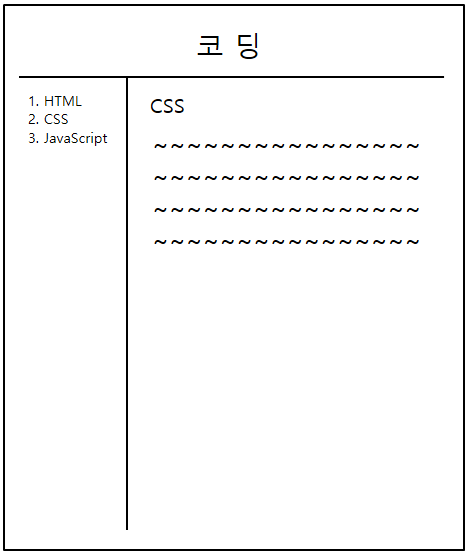
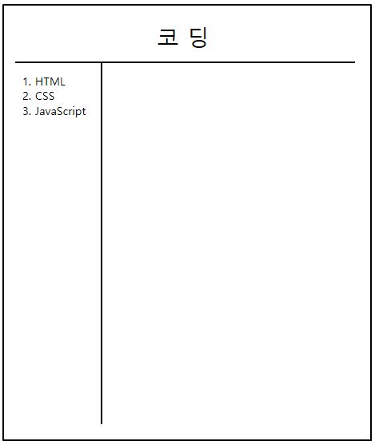

- 웹 페이지를 좀 더 웹 페이지답게 꾸미기
오늘은 어제 말했듯이 웹 페이지를 좀 더 웹 페이지답게 꾸며보려고 합니다.

위와 같은 결과물을 만들 예정입니다.
'박스 모델'과 '검사' 기능을 이용해서요.
단, 'CSS ~~~~~' 부분은 박스 모델만으로는 만들기 어렵기 때문에 오늘은 아래와 같이 만드는 것에 중점을 두겠습니다.

그리고 만드는 과정은 따로 설명하지 않고 결과물만 올릴 예정입니다.
웹 페이지를 좀 더 웹 페이지답게 만들 수 있으므로 직접 해보시는 걸 추천드립니다.
우선, 결과물은 다음과 같습니다.
삽입된 페이지에 마우스 우클릭 후 '페이지 소스 보기'를 통해 해당 페이지 전체 코드를 볼 수 있습니다.
점점 웹 페이지의 형태를 갖춰나가고 있습니다.
내일은 다른 기능을 이용해 우측 공간을 채워보도록 하겠습니다.
그럼 내일도 화이팅!